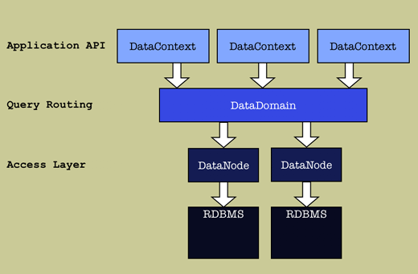

4. Design

4.4 Access Classes
Cayenne database access module consists of a stack of objects,
all implementing QueryEngine
interface:

Since all classes on the stack implement QueryEngine, each higher layer
of control is optional. Only DataNode layer is required for Cayenne to operate.
Each higher layer serves as a controller for the underlying layer, adding more
functionality. Responsibilities of each class are described below:
1.
DataNode - lowest layer controller class, closest to the database. Its
functions are (some of them are delegated to helper classes):
- connects to the database obtaining connection via a JDBC DataSource.
- converts Query
objects into SQL statements and execute them.
- converts JDBC ResultSets into object snapshots (normally this
is objects implementing Map interface).
- generates primary keys for the newly inserted objects.
2. DataDomain - second layer controller class on top of DataNode.
Provides following functionality:
- Combines physical datasources (DataNodes) into a logical
datasource. For example, when an application fetches data from
more then 1 database, programmer need not to be concerned with the
details of connection management. DataDomain will route all queries
to appropriate DataNode for execution.
- Allows creation of DataSource groups. This is the
advanced scenario and may not be used all that often. One example when
this is useful is a case of web application hosting.
A single application may need to
serve multiple companies. Each company would have their own set of
databases. For each one of such sets, a DataDomain will be
configured. When a user of such application starts a new session,
application will need to decide (based on some criteria, like user
login id, virtual host URL, etc.) which company this user belongs to,
and assign a corresponding DataDomain to a session. This way user
view of the database is locked within her company area.
"Domain" is a term that Cayenne uses to describe
such area. Most of the time all users will work with the same set of
DataSources. In this case application will use a
"default domain" shared by all users.
- Serves
as a factory for both lower level DataNodes as well as higher level
DataContexts.
3.
DataContext - highest layer controller class. This is the class directly
accessed by users in most cases. Provides DataObjects
management including these functions:
- Isolates in-memory object changes. DataObjects with uncommitted
changes are tracked in the context. Changes are not visible outside
the context.
- Commits in 1 line of code. If you have a bunch of
DataObjects that you modified (changed attribute values, created new
objects from scratch, marked objects as deleted), it would nice to
commit them all at once without writing any SQL (or even without
creating a bunch of Query objects). DataContext tracks all changes to
objects, so it will do this for you. Just call "commitChanges".
- Caches DataObjects. Performs automatic lazy fetching of related objects.
|